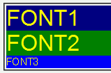
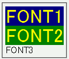

fontプロパティで文法違反をすると、そのプロパティを含むブロック全体のスタイルが無視されてしまう。
<div style="font-size:2em; font-family:Arial,sans-serif; color:yellow; background:navy;"> FONT1</div> <div style="font:2em Arial,sans-serif; color:yellow; background:green;"> FONT2</div> <div style="font:Arial,sans-serif 2em; color:yellow; background:blue;"> FONT3</div>
「FONT1」はfont-size, font-familyを使用した場合、「FONT2」はfontプロパティを正しく使用した場合、「FONT3」はfontプロパティで誤った使い方（サイズとファミリの指定順が逆）をした場合です。
WinIE6.0での表示
NN4.78での表示
CSSでは、不正な宣言が含まれている場合はその宣言のみを無視するように規定されています。
NN4.78ではブロック内のすべての宣言が無視されます。